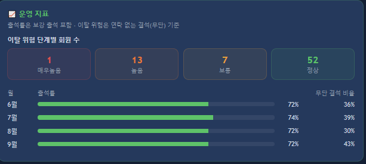
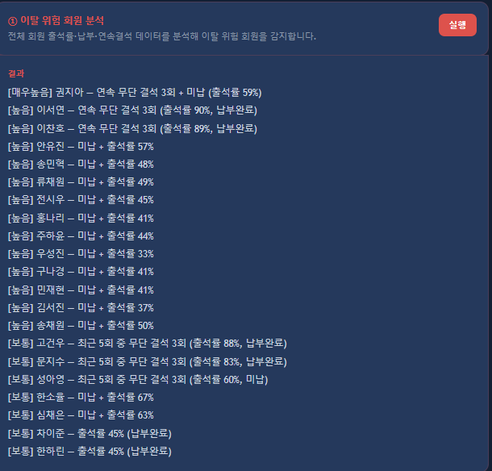
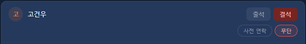
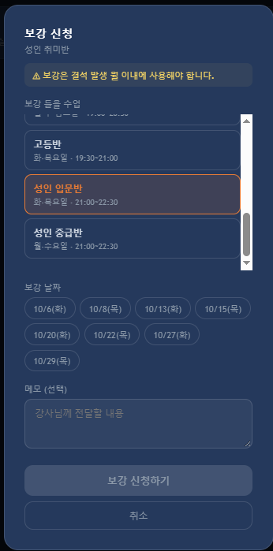
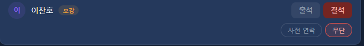
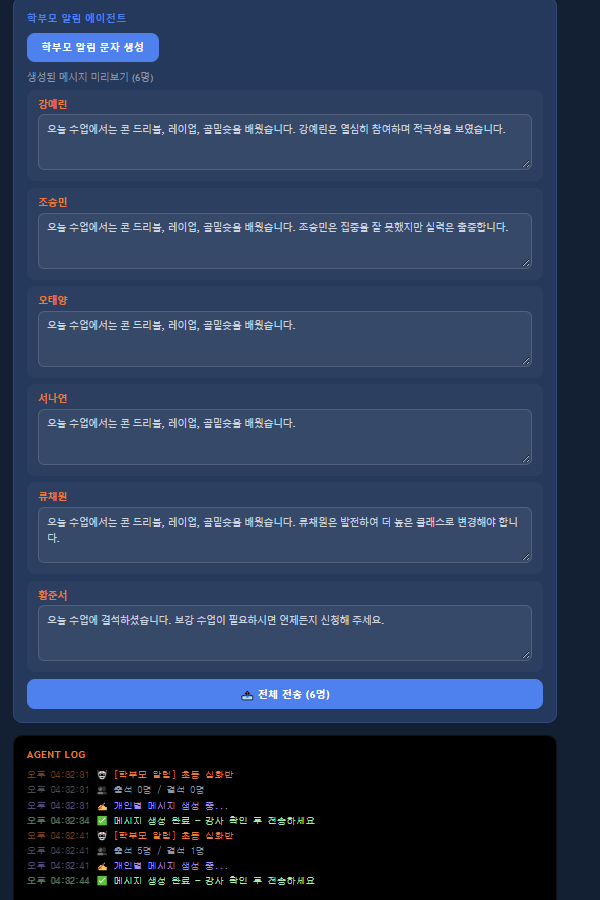

유소년 농구교실에서 3년간 코치로 일하면서 회원 관리, 출석 체크, 수강료 확인, 학부모 소통 같은 행정 업무를 반복적으로 처리해야 했습니다. 이 과정에서 직접 느낀 불편함을 바탕으로, 강사와 회원(수강생·학부모) 모두를 위한 관리 플랫폼을 스스로 기획하고 개발했습니다.
앱을 만들면서 느낀 건, 아이들을 잘 가르치는 것만큼이나 운영의 핵심은 회원 관리라는 점이었습니다. 특히 아이가 그만두고 나서야 알게 되는 경우가 많아서, 쌓이는 출결 데이터로 이탈을 미리 알아챌 수 있도록 이탈 위험 회원을 알려주는 기능을 넣었습니다.
기준은 현장에서 본 아이들에게서 가져왔습니다. 미리 연락하고 빠지는 아이는 계속 다녔지만, 말없이 세 번 이상 빠진 아이는 대부분 그만뒀습니다.
말없이 계속 빠지는 아이들을 보면 대부분 이유가 있었습니다. 농구에 흥미가 떨어졌거나, 학원 친구들과 관계가 좋지 않거나, 나오더라도 부모님이 억지로 보내는 경우였습니다. 이런 아이들은 코치가 먼저 연락하고 더 챙겨야 붙잡을 수 있습니다.
그래서 "몇 번 빠졌나"가 아니라 "연락 없이 몇 번 빠졌나"를 신호로 보기로 했습니다.
출석률과 이탈 신호는 보려는 것이 달라서 하나의 숫자로 합치지 않고 나눴습니다. 출석률은 "수업을 얼마나 받고 있나"이고, 이탈 신호는 "학원과 연락이 끊겼나"입니다.
| 지표 | 정의 | 근거 |
|---|---|---|
| 출석률 | (정규 출석 + 보강 출석) ÷ 정규 수업 수 | 보강을 들었으면 빠진 수업을 채운 것이라 출석으로 인정 |
| 이탈 위험 · 높음 | 연속 무단 결석 3회 (미납이면 매우높음). 보강 날 무단 결석도 포함 | 말없이 3번 이상 빠진 아이는 대부분 그만둠. 주 1회 수업 기준으로 약 3주. 보강도 회원이 직접 잡은 수업이라 정규 수업과 같은 기준 적용 |
| 이탈 위험 · 보통 | 최근 5회 중 무단 결석 3회 | 말없이 빠지다가 부모님 손에 한 번 나오고 다시 안 나오는 경우. 중간에 한 번 나오면 연속 기록이 끊겨 위 규칙에 안 잡힘. 5회는 주 1회 기준 한 달(5주인 달 포함) |
| 무단 결석 비율 | 월별 결석 중 연락 없는 결석의 비율 | 결석이 많은지보다 말없이 빠지는 결석이 늘고 있는지를 보기 위함 |
수강료 미납이면서 출석률이 낮은 경우(예: 미납 + 출석률 60% 미만 = 높음)도 위험으로 함께 보고, 어떤 규칙에 걸렸는지 사유를 같이 보여줍니다.
위험으로 뜬 아이는 학부모님께 연락해 상담하고, 수업 때 아이에게 더 신경 쓰고 따로 이야기를 나눕니다.
결석 사유와 보강 기록은 코치가 평소 하는 출석 체크와 보강 처리 과정에서 함께 남기게 해, 따로 입력할 일이 거의 없도록 했습니다.
처음에는 실제 회원 데이터로 테스트했지만, 개인정보 때문에 모두 더미 데이터로 바꿨고 실제 데이터는 보관하지 않습니다. 더미 데이터는 초등부터 성인까지 9개 수업, 2026년 6~9월 기간으로 실제 학원 한 지점 규모에 맞췄고, 결석 중 사전 연락 비율은 현장 경험대로 약 65%로 넣었습니다.
실제 데이터가 없어서 규칙이 맞는지는 검증할 수 없었습니다. 대신 규칙이 의도대로 작동하는지 확인하려고, 패턴을 정해 둔 더미 회원 7명을 넣고 결과를 봤습니다.
| 패턴 (오래된 것 → 최근) | 출석률 | 판정 |
|---|---|---|
| 무단 · 무단 · 무단 (미납) | 59% | 매우높음 |
| 무단 · 무단 · 무단 | 90% | 높음 |
| 무단 · 무단 → 보강 잡고 무단 불참 | 89% | 높음 |
| 무단 · 출석 · 무단 · 출석 · 무단 (2명) | 83%, 88% | 보통 |
| 사전 연락 결석 → 보강 출석 (2명) | 85%, 93% | 정상 (보강이 출석률에 반영) |
출석률이 90% 가까이 되는 아이도 연락 없이 세 번 빠지면 높음으로 잡힙니다.






실제 데이터로 검증하지 못함: 규칙은 현장 경험에서 세운 가설이고, 실제 데이터는 개인정보 때문에 보관하지 않아 위험으로 잡힌 아이가 실제로 그만뒀는지는 확인하지 못했습니다. 더미 데이터로는 규칙이 의도대로 작동하는지까지만 확인했습니다.
기준의 범위: 기준은 주 1회 수업을 듣는 아이들을 보며 잡았습니다. 주 2회 수업을 듣는 아이는 같은 3회가 약 1.5주라 알림이 조금 더 일찍 뜰 수 있어, 이런 경우는 코치가 상황을 보고 판단합니다.
입력에 기대는 부분: 사전 연락 여부는 코치가 고르는 값이라, 고르지 않으면 기본값인 무단으로 남아 위험이 실제보다 크게 잡힐 수 있습니다. 그래서 출석 체크를 할 때 사유까지 바로 고르는 것이 중요합니다.
개선 방향: 앱을 마무리하면 지금 일하는 농구교실 원장님께 드려 실제로 쓸 예정입니다. 쓰면서 그만둔 아이가 생기면 그만둔 날짜와 이유를 함께 기록해 두려고 합니다. 그러면 위험으로 잡혔던 아이 중 실제로 그만둔 비율을 보고, 경험으로 정한 기준(연속 3회, 최근 5회)을 데이터로 다시 정할 수 있습니다.